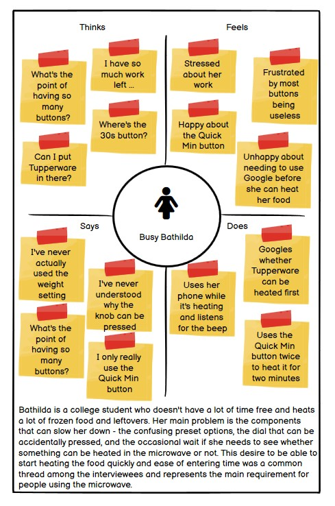
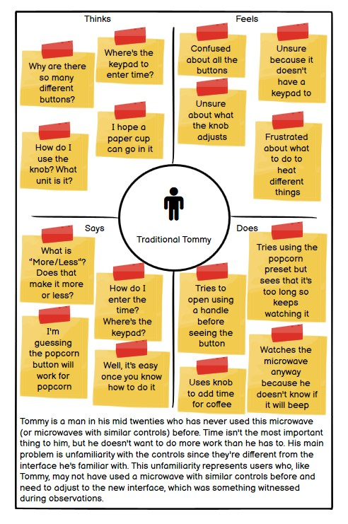

Personas and Storyboarding: Microwave
An analysis of the microwave in the kitchen on the third floor of the CIT
Microwave
The problem the microwave is trying to solve is that of heating food or beverages. It has several components, which function as follows.
- Microwave door with see-through glass: opens to allow the item to be put inside and is see-through to allow the user to view the item being heated.
- Time / weight display: displays the current time, time remaining to heat, or weight selected to heat
- Preset buttons: buttons with built-in functionality, such as a popcorn timer.
- Time / weight knob: adjust the time / weight
- Preset buttons: a row of buttons with built-in functionality, such as a Quick Min button
- Action buttons: buttons to stop or start the microwave
- Door release button: opens the microwave door
Observations
Objective observations of the users interacting with the microwave
- There was often some unfamiliarity with the microwave controls, which took a small amount of time to figure out.
- Some users tried opening the microwave using a door handle, while this microwave had a button.
- Multiple users accidentally pressed the knob in.
- Users overwhelmingly favored using the knob or Quick Min buttons over any of the presets.
- Users took a little time trying to figure out whether the microwave was on the time or weight setting.
- Users would usually look up whether something they weren't sure about could go in the microwave, though some would opt to put it in and keep a close eye on it.
Questions
Questions posed to users of the microwave
- How often do you use a microwave?
- Rarely (<= 1 time a week)
- Occasionally (2 - 4 times a week)
- Often (5 - 7 times a week)
- Very often (8+ times a week)
- What do you typically use a microwave for?
- Reheating food / drink
- Cooking frozen food (e.g. Trader Joe's)
- Cooking microwave foods (ex. popcorn, cup noodles)
- Clock / timer
- Other (please specify)
- Are there any buttons on the microwave which you don't know what they do? If so, please give an example of one.
- Yes, many
- Yes, some
- No, I know what they all do
- Which of these do you consider most important in the microwave usage experience?
- Variety of preset options
- Ease of setting a time to heat
- Accurate clock / timer
- Other (please specify)
- How would you prefer to know that the microwave has finished heating the food?
- Just watching the microwave
- Microwave beeping
- Other (please specify)
- Which of these do you find most frustrating about using the microwave? Select all that apply.
- Confusing preset options
- Many more buttons than required
- Difficult to set a simple time for heating
- Nothing is frustrating
- Other (please specify)
- Since there are no guidelines on the microwave, what would you do if you needed to heat something which you weren't sure could be microwaved?
- I would heat it anyway
- I wouldn't heat it
- I would look it up first
- Would having guidelines for what can be heated on the microwave help?
- Yes
- No
Responses
A summary of the responses to the questions asked.
- While the frequency of usage varies between users, the most common reason that people use the microwave is to reheat food or beverage, and sometimes to heat up frozen food.
- There are several buttons on the microwave which users don't know what they do, such as Inverter Turbo Defrost or More/Less. The preset options don't usually work for a user's requirements.
- The most important component of the user's microwave usage experience is the ability to easily and quickly set a time and run the microwave. The sheer number of buttons and the confusing preset options are the most frustrating components of the microwave.
- When trying to heat something they didn't know could go in a microwave, users would usually look up whether it could be heated or not. In some cases, if it was being heated for a short amount of time, they would heat it and watch the microwave carefully. Having concise guidelines on the microwave would help reduce the time required for this step.
Personas
Breaking down the overarching trends in observations and interviews
Busy Bathilda 
Traditional Tommy 
Storyboard
A look at Traditional Tommy's experience using the microwave